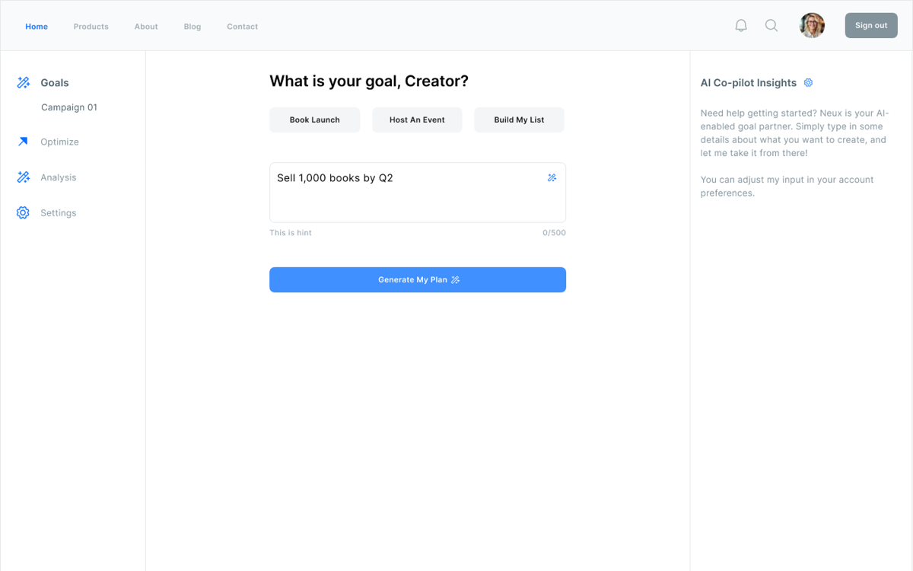
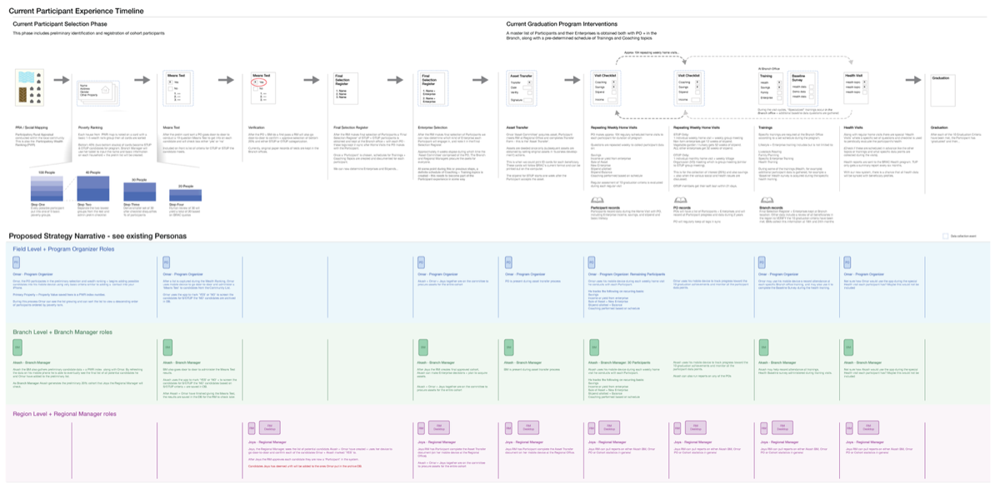

Opportunity Radar
Finds companies likely to be hiring before roles are even posted — a live dashboard ranking hiring momentum by tracking signal strength across news, Reddit, and LinkedIn in real time.
- Product Design
- AI Workflow
- Live Product
Portfolio & statement of purpose
A record of past success studies alongside future direction — this site grows and shifts as I do. Built to help you understand how I work before we meet.
Selected work
Finds companies likely to be hiring before roles are even posted — a live dashboard ranking hiring momentum by tracking signal strength across news, Reddit, and LinkedIn in real time.

An AI co-pilot that turns creator goals into actionable plans. Self-directed capstone project — designed in Figma, built with AI and code.
This site is its own case study — designed and built using AI-assisted workflows across Figma, Claude, and Cursor, documented as it happens.

Designing scalable tools for global poverty-reduction programs — mapping participant selection, field visits, and multi-level reporting across program organizers, branch managers, and regional teams.
Get in touch